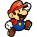
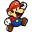

Super Mario World é aquele jogo que todas as pessoas que viveram sua
infância nos anos 90 jogaram. Aliás, a maioria das crianças tinha
essa fitinha clássica em sua caixinha de jogos. Foi uma evolução
gráfica do Super Mario Bros, em que o jogador controlava a versão
mais famosa e atual do Mario.


 
